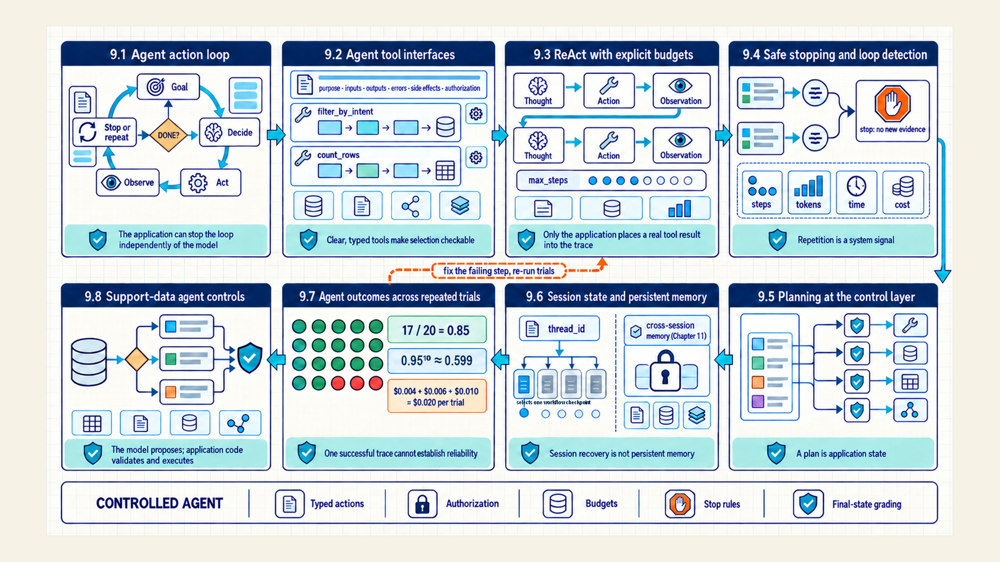
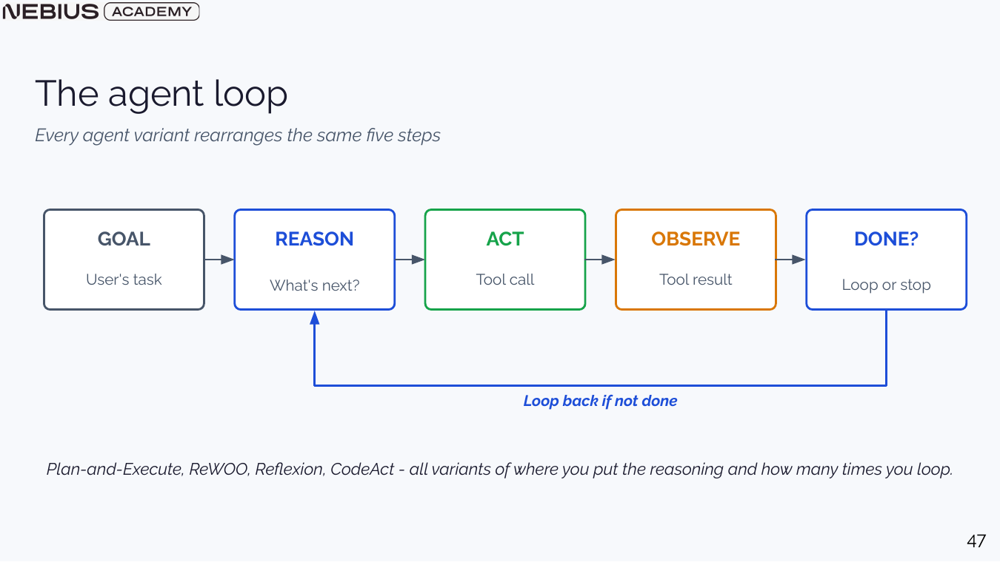
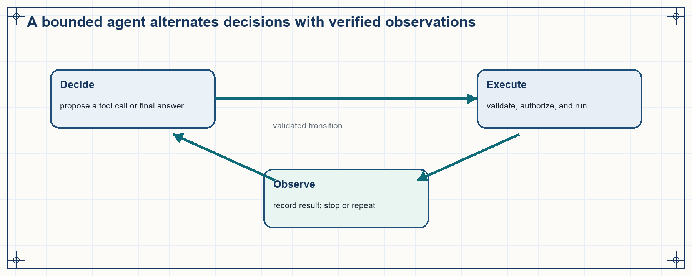
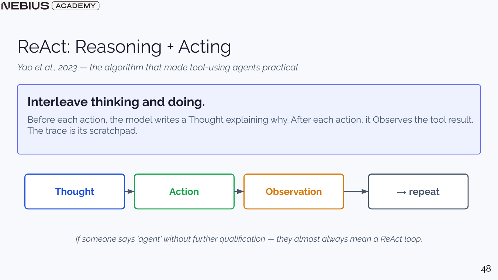
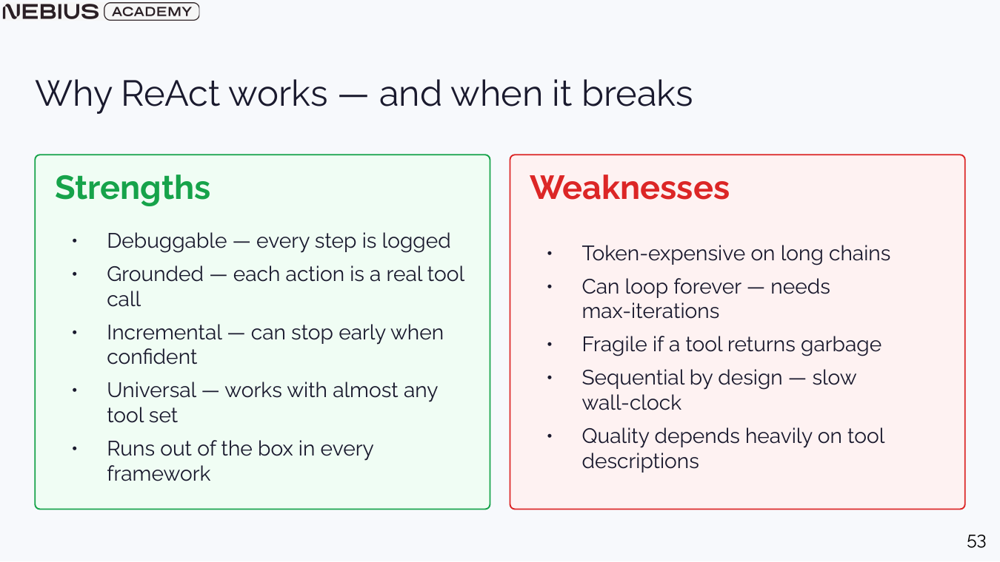
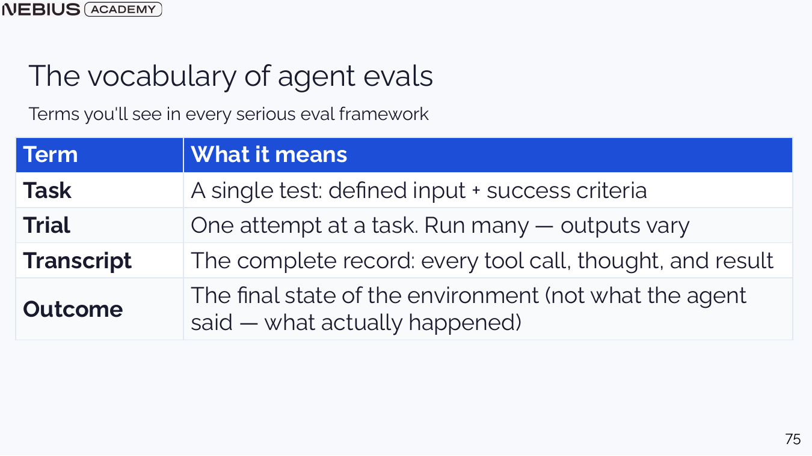
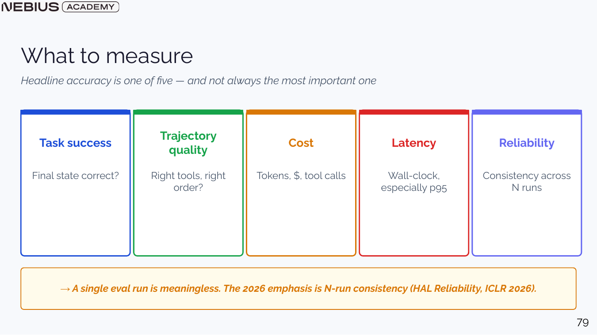

9 Controlled tool use by agents
Chapter 8 kept control flow in application code whenever the task structure was known. Some tasks require repeated choices whose next step depends on search results, tool output, or environment state not available at the start. A controlled agent loop maps every ReAct decision, tool call, and observation to application responsibilities, schemas, authorization, budgets, state, and stopping rules.

The map follows one decision-execution-observation loop through schemas, authorization, state, planning, and termination into the graders that compare versions by final environment state.
9.1 Agent action loop
A workflow can contain model calls without giving the model control over the sequence. The defining change in an agent is that a model chooses at least part of the next action after observing the current state. The universal loop is goal, reason or decide, act, observe, and stop or repeat.
An agent is a system in which a model selects actions toward a goal using observations, tools, and state inside application-enforced limits. Autonomy is a control-flow property created by the surrounding loop, not a personality assigned in a prompt.

The DONE? gate belongs to the system control loop. Without a success check, iteration cap, or budget, the loop can continue until context or money is exhausted.

The application can reject malformed or unauthorized actions before execution and can stop the loop independently of the model.
Action: A proposed operation such as calling a tool, asking for clarification, delegating a subtask, or returning a final answer.
Observation: The environment result returned after an action, such as tool output, error, updated state, or user response.
Trajectory: The ordered record of model decisions, tool calls, observations, and state changes in one trial.
A controlled agent can be modeled as a state machine. The current state contains the goal, selected evidence, prior observations, remaining budgets, and policy-relevant context. The model proposes one action, the application validates and executes it, and a new observation updates the state. A termination function decides whether the goal, fallback, or budget condition has been reached.
Observation provenance is essential because the model cannot be allowed to invent tool results. Each observation retains the tool identity, normalized arguments, authorization context, result status, and relevant version. Agent evaluation can then distinguish a reasoning error from a tool error, stale data, rejected authorization, or an invalid state transition.
9.2 Agent tool interfaces
An agent chooses its next action from the capabilities that the application makes available. Ambiguous names, overlapping descriptions, or untyped parameters make that choice a language-guessing problem before the loop has even begun. A tool specification states purpose, inputs, outputs, errors, side effects, and authorization so both model and application can reason about a safe action set.
Good tool descriptions say when the tool should be used, what each parameter means, which units and formats are accepted, and what result or error to expect. Keep tools focused. A few distinct tools usually outperform many similar functions whose boundaries are unclear.
| Tool definition element | Question it answers | Application check |
|---|---|---|
| Name and purpose | Which capability does this tool provide? | No confusing overlap with another tool |
| Typed arguments | What exact inputs are required? | Schema, ranges, identifiers, units, and defaults |
| Result schema | What observation returns? | Stable fields, provenance, and explicit errors |
| Side effects | What external state can change? | Authorization, approval, idempotency, and audit log |
| Failure behavior | What should happen on timeout or invalid state? | Retry policy, fallback, and user-visible message |
Code example 9.1 - a typed data tool states its scope and returns a controlled observation.
This abbreviated Python illustration assumes that the application supplies BaseModel, Field, and @tool from its chosen Pydantic and tool framework, plus DATASET, its current dataset_version, authenticated current_user, and a server-side result_store. authorized_rows returns the full dataset slice the current user may read; result_store stores filtered row IDs and scope without exposing them to the model. filter_by_intent returns a limited preview and an opaque reference to the complete filtered set. count_rows(rows=row_ref) returns an exact count for that reference or a typed error for an invalid intent, unauthorized caller, or stale dataset version. Neither tool modifies the dataset.
Code example: Code example 9.1 - a typed data tool states its scope and returns a controlled observation.
# Abbreviated illustration: the application supplies DATASET, current_user,
# authorized_rows, and result_store. Its tool framework validates tool arguments
# into these models, then registers wrappers that call the plain Python functions.
# The store keeps complete row IDs and scope server-side; the model receives only
# an opaque reference and a limited preview.
class IntentFilter(BaseModel):
intent: str = Field(description="Exact Bitext intent name.")
limit: int = Field(default=20, ge=1, le=100)
class CountRows(BaseModel):
rows: str = Field(description="Opaque row_ref returned by filter_by_intent.")
def filter_by_intent(args: IntentFilter) -> dict:
"""Return a full-set row reference and at most `limit` preview rows."""
rows = authorized_rows(DATASET, current_user)
valid_intents = {row["intent"] for row in rows}
if args.intent not in valid_intents:
raise InvalidToolArgument("Unknown intent for this dataset version.")
filtered = [row for row in rows if row["intent"] == args.intent]
row_ref = result_store.store_filtered_ids(
row_ids=[row["row_id"] for row in filtered],
caller_id=current_user.id,
dataset_version=DATASET.version,
intent=args.intent,
)
return {"row_ref": row_ref, "preview": filtered[:args.limit]}
def count_rows(args: CountRows) -> dict:
"""Return the exact count for an authorized, current filtered reference."""
result = result_store.load_filtered_ids(
args.rows, caller_id=current_user.id, dataset_version=DATASET.version
)
return {
"count": len(result.row_ids),
"dataset_version": result.dataset_version,
"intent": result.intent,
}The Pydantic schema constrains argument form, while authorized_rows and the result store enforce access outside the model. The preview limit bounds context growth only; it does not change the complete filtered set behind row_ref. The model passes that opaque reference to count_rows and receives the exact count plus its dataset version and intent, not an unbounded row list.
9.3 ReAct with explicit budgets
The tool specification now names the actions, argument schemas, and observations that the application can safely execute. A single model answer cannot reliably solve a changing question when new evidence must be gathered between decisions. ReAct interleaves reasoning, one schema-validated tool action, and its real observation until enough evidence exists or the system stops.
Classic ReAct writes Thought, Action, and Observation in a text trace. The model emits a thought and a parseable action, the application validates and executes the tool, and the real observation is appended. Modern function calling represents the action as structured data and may keep private reasoning internal, but the control loop is the same.

The model must not fabricate the observation. The application is the only component allowed to place a validated tool result into the trace.
A worked implementation asks for the current leader of a changing leaderboard. A bare model may answer from stale training data. The ReAct version receives a wikipedia_search tool, emits a search action, observes the returned text, and answers only from that observation.
Code example 9.2 - the notebook loop gives the application control after every model decision.
This simplified notebook loop is not production code. It assumes the harness supplies SYSTEM_PROMPT, call_llm, parse_action, parse_final_answer, wikipedia_search, and validate_final_answer. It returns a validated answer string after a real observation, or an explicit invalid-action, insufficient-evidence, or max-step fallback; it does not make purchases, update a database, or grant access.
Code example: Code example 9.2 - the notebook loop gives the application control after every model decision.
def run_agent(question, max_steps=6):
messages = [
{"role": "system", "content": SYSTEM_PROMPT},
{"role": "user", "content": question},
]
saw_observation = False
for step in range(1, max_steps + 1):
output = call_llm(messages)
answer = parse_final_answer(output)
if answer is not None:
if not saw_observation:
return "Insufficient evidence: no tool observation was returned."
if validate_final_answer(answer, messages):
return answer
return "Final answer was not supported by the observation."
argument = parse_action(output)
if argument is None:
return "No valid action was produced."
observation = wikipedia_search(argument)
saw_observation = True
messages.append({
"role": "assistant",
"content": output + f"\nObservation: {observation}",
})
return "Max steps reached."call_llm manages one model decision, parse_action enforces the tool specification’s expected action syntax, wikipedia_search executes outside the model, and messages stores the current working trace. parse_final_answer recognizes the notebook’s answer marker, while validate_final_answer checks that the answer is supported by the recorded observation. max_steps is a system stop condition. A production version would add typed function calls, authorization, retries, structured state, and source validation.
9.4 Safe stopping and loop detection
Clear tools improve the probability of a useful action. An exploratory loop can still repeat searches, alternate between tools, or pursue an impossible task indefinitely. Budgets and stop conditions bound iterations, tokens, time, money, tool calls, and side effects independently of the model’s confidence.

The weaknesses map to concrete controls: iteration limits, context compaction, tool redesign, parallel alternatives, and task-level evaluation.
- Iteration budget: maximum decision-action cycles before a graceful fallback.
- Token budget: total input and output tokens across the complete trajectory.
- Tool budget: maximum calls per tool, rate limits, and retry bounds.
- Wall-time budget: deadline for the complete task, including external services.
- Monetary budget: estimated or actual cost across models, tools, and human review.
- Side-effect budget: permitted action count, value, scope, and approval requirement.
A stop condition can be task success, explicit model finalization that passes validation, no useful action, repeated state, unchanged evaluation score, budget exhaustion, or user cancellation. Return a useful fallback that states completed evidence and unresolved blockers.
Loop detection
Hash or normalize recent action-observation states and stop when the agent repeats without new evidence. Repetition is a system signal; asking the same model to try again with the same state rarely creates new information.
Budgets turn open-ended autonomy into explicit product behavior. Iteration budgets limit decision cycles; tool budgets limit calls or external charges; time budgets cap wall-clock delay; token budgets constrain model context and generation; and side-effect budgets restrict count, value, scope, or approval level. The remaining budget is explicit agent state that the application updates and enforces.
Termination has named outcomes. Success requires a validated final state. A confident message alone does not establish completion. Other terminal states include insufficient evidence, unsupported scope, authorization failure, recoverable tool failure, exhausted budget, and human escalation. Typed outcomes make fallback behavior measurable and prevent a loop from disguising itself as progress.
9.5 Planning at the control layer
The basic loop now has typed actions, validated observations, budgets, and stop rules. Some tasks expose dependencies that are useful before the next action is chosen. Chapter 10 teaches the planning methods; for now, retain one boundary: a plan is application state, and every planned action still passes the same authorization, execution, and outcome checks.
Use the direct observation-driven loop unless a visible plan, dependency graph, parallel schedule, or sandboxed compound action improves a measured task outcome. Planner selection and mechanics begin in Chapter 10.
9.6 Session state and persistent memory
An agent trajectory stores messages, actions, observations, and graph state for one run. A follow-up or process restart may need that state again, but session recovery does not justify copying the thread into a permanent profile. A checkpoint restores one thread; Chapter 11 teaches how selected information may cross sessions through a separate memory lifecycle.
LangGraph is a library for applications that run stateful workflows as graphs. A LangGraph application can pair a checkpoint—a stored graph state for one thread or session—with a session identifier so the same conversation resumes after a restart. InMemorySaver is an in-process demonstration store; a durable saver backed by SQLite or Postgres preserves that state across process restarts under application control.
Code example 9.3 - a thread identifier restores only the matching session state.
This abbreviated LangGraph pattern assumes the application has built graph, supplied session_id and user_text for the authenticated session, and imported HumanMessage from its selected library version. graph.invoke restores and updates the checkpoint for that thread, returning the graph result; it does not promote any message to cross-session memory.
Code example: Code example 9.3 - a thread identifier restores only the matching session state.
config = {"configurable": {"thread_id": session_id}}
result = graph.invoke(
{"messages": [HumanMessage(content=user_text)]},
config=config,
)thread_id selects the checkpoint for one conversation. It grants no permission to promote content into a cross-session store. Persistent reuse requires the promotion, correction, retention, and deletion controls taught in Chapter 11.
9.7 Agent outcomes across repeated trials
An agent introduces variable trajectories, tool behavior, and environment state beyond a single model response. One successful trace cannot establish reliability, and grading one preferred path can reject valid alternative strategies. Agent evaluation separates tasks, trials, transcripts, authoritative outcomes, graders, reliability, cost, and latency before comparing system versions.

The outcome is the validated final environment state. The model’s final message is one diagnostic trace, not proof of completion. A task can fail even when the final message sounds successful.
For \(N\) trials, let \(s_i\) be one when trial \(i\) reaches the required final state and zero otherwise. The observed task success rate is:
\[ \hat{p}=\frac{\sum_{i=1}^{N}s_i}{N} \tag{9.1}\]
Here, \(N\) is trial count, \(s_i\) is the binary final-state result for trial \(i\), and \(\hat{p}\) is observed success frequency. Summation counts successful trials and division normalizes by attempts. The estimate needs an uncertainty interval and enough trials for the product decision.
Worked calculation - repeated agent reliability
Run the same state-reset task 20 times. The agent reaches the required final state in 17 trials.
- Sum the binary success indicators: 17.
- Divide by N = 20: 17 / 20 = 0.85.
- Inspect the three failures by trajectory and final environment state.
Result: Observed task success is 0.85 across these 20 trials.
Interpretation: The score does not say whether 0.85 is acceptable, nor whether failures cluster around one tool, slice, or latency condition. Report those alongside the rate.
A product may require several consecutive successful runs. Under the simplifying assumption that trials are independent and each succeeds with probability p, all-trial reliability decreases multiplicatively.
\[ R_m=p^m \tag{9.2}\]
Here, \(m\) is the number of required successful trials and \(p\) is single-trial success probability. Exponentiation multiplies the same probability once for each required success. Real agent failures often share a prompt, tool, or environment. Use this equation as an optimistic diagnostic model and validate release reliability with repeated trials.
Worked calculation - ten consecutive successful trials
Assume an idealized independent per-trial success probability of 0.95 and require ten successful runs.
- Raise the per-trial probability to the number of required runs: 0.95¹⁰.
- The resulting probability is approximately 0.599.
Result: Even a 95 percent single-trial rate yields only about a 60 percent chance that all ten runs succeed.
Interpretation: Repeated workflow reliability can be much lower than the impressive-looking single-trial rate. Correlated failures make the real result worse than this independent model.
Accumulate cost across every model and tool step in a trial, including failed and retried steps.
\[ C_{trial}=\sum_{s=1}^{S}(r_{in}N_{in,s}+r_{out}N_{out,s}+c_{tool,s}) \tag{9.3}\]
Here, the first term counts the number of executed steps; the input and output token counts are measured separately at each step; the corresponding rates are dated prices; and the final term is the charge or measured infrastructure cost for that step’s tool call. The sum includes failed and retried steps. Cost per successful task divides total trial cost, including failures, by successful outcomes.
Worked calculation - three-step agent trial cost
Three executed steps cost $0.004, $0.006, and $0.010 after their model and tool charges are combined.
- Add the first two step costs: $0.004 + $0.006 = $0.010.
- Add the final step: $0.010 + $0.010 = $0.020.
Result: The complete trial costs $0.020 before shared infrastructure overhead.
Interpretation: A failed $0.020 trial still contributes to cost per successful task. Retry-heavy agents can look inexpensive when only the final successful path is counted.
Code example 9.4 - repeated trials use fresh state and grade the durable outcome.
This abbreviated Python pattern assumes task supplies an ID, prompt, and authoritative-outcome grader; agent_factory creates a fresh agent for each seed; and fresh_sandbox creates isolated files, data, and caches. It returns one record per trial with a transcript, durable outcome, grade, cost, and latency. The example does not promote trial state into a user profile.
Code example: Code example 9.4 - repeated trials use fresh state and grade the durable outcome.
def run_trials(task, agent_factory, trials=20):
records = []
for seed in range(trials):
sandbox = fresh_sandbox(task, seed)
result = agent_factory(seed).run(task.prompt, sandbox)
outcome = sandbox.snapshot()
grade = task.grader(outcome)
records.append({
"task_id": task.id,
"seed": seed,
"transcript": result.transcript,
"outcome": outcome,
"success": grade.success,
"cost": result.cost,
"latency_ms": result.latency_ms,
})
return recordsA fresh sandbox prevents one trial’s files, database rows, or cached observations from contaminating the next. The grader reads the authoritative end state and uses the final message only as diagnostic trace evidence. Transcripts remain diagnostic evidence for route, parser, tool, retry, and stop-condition failures.

Trajectory quality is primarily diagnostic. Grade the path only when a policy requires or forbids a particular action sequence.
- Task success: final state satisfies the task and policy.
- Cost: model tokens, tool charges, human review, and infrastructure.
- Latency: complete wall time with p50, p95, and timeout rate.
- Reliability: consistency across repeated trials and relevant slices.
- Trajectory quality: tool selection, errors, retries, and policy events for diagnosis.
9.8 Support-data agent controls
The preceding sections supplied the agent loop, tool specifications, budgets, persistent state, and repeated-trial evaluation. The running case uses the Bitext customer-support dataset introduced with the tool specification in Section 9.2. A data analyst agent combines those pieces while limiting its scope to that labeled dataset. The router, tools, multi-step reasoning, interface, and recoverable session state give the case an auditable architecture with explicit state and tool boundaries.
The dataset contains labeled customer-support requests. Each row carries a request text and a canonical intent label such as get_refund, so routing and exact-count questions can be graded without any ambiguity about which rows match.
The router classifies structured, unstructured, or out-of-scope requests before tool selection. Structured questions use deterministic dataset tools for categories, filtering, counts, examples, and distributions. Unstructured questions use selected rows as evidence for summarization. Out-of-scope questions receive a clear decline with the supported scope and next available route.
The multi-step request How many refund requests are in the dataset? first calls filter_by_intent(intent='get_refund', limit=20). The tool filters the full authorized dataset, stores the complete filtered ID set and its caller and dataset scope on the server, and returns {"row_ref": ..., "preview": [...]}. The preview contains at most 20 rows; it is not the counting input. The next call, count_rows(rows=row_ref), checks the caller and dataset version and returns {"count": 27, "dataset_version": ..., "intent": "get_refund"} for the complete set. The model never computes that count or receives all matching rows. A maximum iteration limit returns a graceful fallback. The command-line interface exposes tool calls and observations for debugging. Session IDs restore episodic state; Chapter 11 governs any separate profile that stores selected user facts.
| Component | Input | Output or state | Acceptance evidence |
|---|---|---|---|
| Router node | User question | Supported route label | Golden route set including out-of-scope cases |
| Dataset tools | Typed parameters and authorized data | Rows, counts, or summaries | Unit tests and bounded result sizes |
| ReAct graph | Route, messages, tool registry | Final answer and trajectory | Max-step fallback and repeated task success |
| Checkpointer | Session ID and graph state | Restored episodic history | Restart test with follow-up references |
| Profile store | User ID and validated facts | Curated semantic profile | Correction, persistence, and deletion tests |
Chapter checkpoint
An agent executes reliable tool use through typed tool schemas, external validation, managed state, budgets, and repeated final-state evaluation. Chapter 10 extends this foundation through planning, MCP, sandboxed code, and retrieval recovery without weakening those controls.